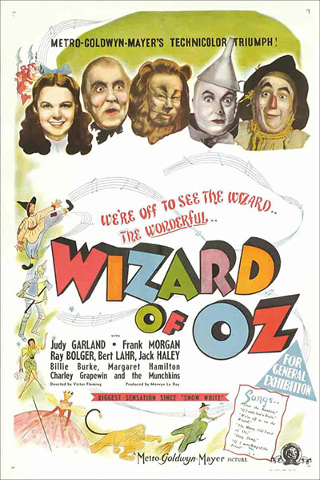

The Wizard of Oz is a 1939 American musical fantasy film produced by Metro-Goldwyn-Mayer. An adaptation of L. Frank Baum's 1900 children's fantasy novel, The Wonderful Wizard of Oz. Characterized by its use of Technicolor, fantasy storytelling, musical score, and memorable characters, The Wizard of Oz was moderately successful upon its original release of August 25, 1939. The film was considered a critical success and was nominated for six Academy Awards